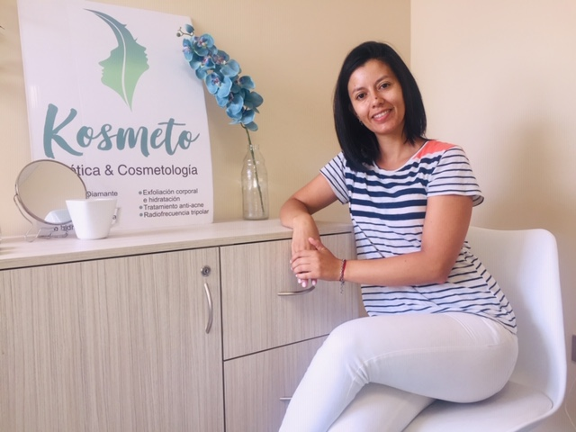

Marina Giordano
- Cosmiatra profesional MN:24505, recibida en DR escuela de cosmetología. Título abalado por la federación argentina de cosmetología y estética.
- Cosmetóloga profesional, recibida en DR escuela de cosmetologia. Título abalado por la federación argentina de cosmetología y estética.
- Experta en facial cupping. Título internacional con 7 acreditaciones internacionales, de la mano de Sakina Di Piace.
- Licenciada en instrumentación quirúrgica, recibida en la Universidad Maimonides.
- Auxiliar en RRHH, recibida en la Escuela Argentina de Negocios.